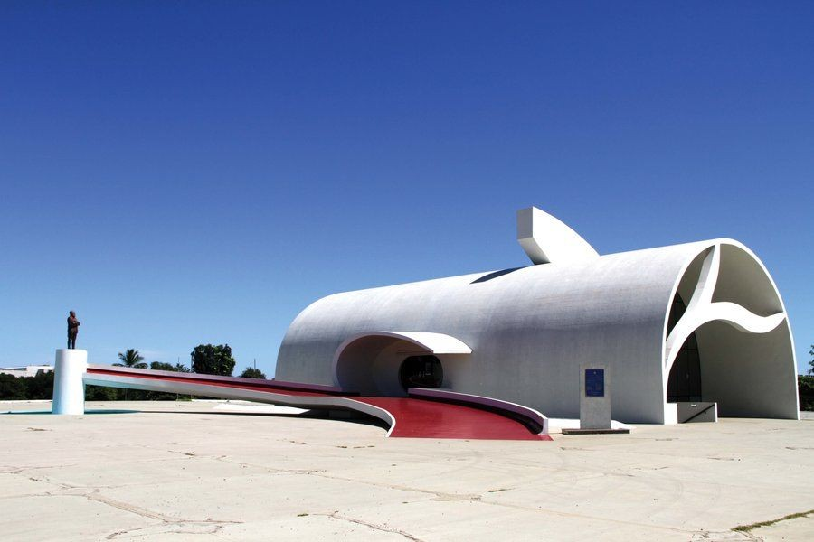

Palmas

Palmas, a capital do Tocantins, é uma cidade jovem, fundada em 1989, que rapidamente se destacou como um importante destino turístico no Centro-Oeste do Brasil. Localizada entre as belezas naturais da Amazônia e do cerrado, Palmas oferece aos turistas um equilíbrio entre áreas urbanas modernas e uma rica diversidade de ecossistemas, sendo um excelente ponto de partida para explorar o estado e suas belezas naturais.
A cidade é conhecida por suas atrações naturais, como o Palácio Araguaia e o Lago de Palmas, além de ser cercada por parques e áreas de lazer. Ela também é um ótimo destino para quem busca ecoturismo, com várias opções de passeios para conhecer o Parque Nacional de Jalapão e outros pontos naturais do Tocantins. Palmas ainda conta com uma arquitetura moderna e infraestrutura de qualidade, que fazem dela uma cidade acolhedora e agradável para turistas de todas as partes do Brasil e do mundo.
Principais pontos turísticos
- Lago de Palmas
- Parque Nacional de Jalapão
- Palácio Araguaia
- Praia das Arnos
- Cachoeira do Lajeado
O Lago de Palmas é um dos maiores atrativos turísticos da cidade e é um ponto central para atividades de lazer e esportes aquáticos. Com uma vasta área de águas doces e rodeado por praias artificiais, o local é ideal para passeios de barco, caminhadas e banhos de sol. O lago também conta com a Praia da Graciosa, onde os turistas podem relaxar em um ambiente tranquilo, além de ser palco de eventos culturais e festivais.
Embora não esteja exatamente dentro da cidade, o Parque Nacional de Jalapão é uma das maiores atrações turísticas de Palmas, representando o ecoturismo no estado do Tocantins. Localizado a cerca de 300 km da cidade, o parque é famoso por suas paisagens deslumbrantes, incluindo dunas douradas, fervedouros (poços de águas cristalinas), cachoeiras e rios. O Jalapão é uma excelente opção para os amantes de natureza e aventuras ao ar livre.
O Palácio Araguaia é a sede do governo do estado do Tocantins e um marco da arquitetura de Palmas. O prédio possui uma estrutura moderna e se destaca pela sua localização e importância histórica. O palácio fica próximo ao Lago de Palmas e é possível visitá-lo, embora o acesso seja restrito em algumas áreas devido às funções governamentais. O local também abriga eventos culturais e é ponto de interesse turístico para quem deseja aprender mais sobre a política e história do estado.
A Praia das Arnos, localizada às margens do Lago de Palmas, é uma das mais frequentadas pelos moradores e turistas. A praia artificial oferece uma excelente infraestrutura para quem deseja relaxar à beira do lago. Além das águas calmas, o local conta com quiosques, bares e áreas de lazer, ideal para um dia de descanso e convivência com a natureza.
A Cachoeira do Lajeado, localizada a aproximadamente 35 km de Palmas, é uma das maiores quedas d'água da região. É um excelente destino para quem gosta de ecoturismo e atividades como trilhas, caminhadas e banhos em poços naturais. A cachoeira é cercada por uma paisagem natural impressionante e é uma ótima opção para quem deseja explorar mais a fundo as belezas naturais de Palmas.
Principais pontos gastronômicos
- Maria Izabel Cozinha
- Localização: Centro de Palmas.
- Restaurante e Pizzaria Fogão à Lenha
- Localização: Plano Diretor Sul.
- Köwa Hamburgueria
- Localização: Plano Diretor Sul.
- Feira da 304 Sul
- Localização: Plano Diretor Sul.
O elegante Maria Izabel Cozinha oferece requintadas opções da culinária tocantinense na área central de Palmas. O restaurante serve deliciosos pratos em um menu à la carte. Dentre os destaques do estabelecimento, está a suculenta “Caldeirada Graciosa“, que leva filé de peixe pirarucu e camarão no leite de babaçu. Outra opção é o celebrado “Maria Izabel Pequi”, um delicioso arroz com a fruta do Cerrado, acompanhado de salada, banana-da-terra frita e molho verde.
O ambiente do Maria Izabel Cozinha é intimista e com possibilidade de mesas no jardim.
Um dos mais bem avaliados pontos de alimentação em Palmas, o Restaurante e Pizzaria Fogão à Lenha é o lugar ideal para experimentar uma comida bem temperada e com gostinho mineiro na capital do Tocantins. Lá, as opções de culinária brasileira e italiana têm sabor caseiro e o ponto irresistível das preparações em fogão à lenha. No menu de pizzas, os sabores vão dos clássicos até os criados especialmente na casa. Dentre o que é exclusivo, prove a deliciosa combinação “pernil à mineira“, que acompanha bacon, mozarela e tomate picado sobre massa crocante. Outra criação muito elogiada é a “Vegetariana Ousada“, feita com ricota, brócolis, abobrinha e tomate seco.
O cardápio completo do Fogão à Lenha ainda conta com petiscos e pratos principais. O grande destaque é a moqueca de pintado ou pirarucu. Deguste também as saladas, os escondidinhos e os risotos.
Pensado em um ambiente descontraído para curtir aperitivos e burguer artesanais em Palmas? O Köwa Hamburgueria se destaca como o bar e lanchonete com mais avaliações positivas da cidade. O espaço tem clima de quintal com balada, e as proprietárias são alemãs, daí o nome diferente do local. Aproveite o horário da happy hour para conferir as opções de chope internacional e muito som. Na parte dos lanches, não deixe de conferir os aclamados Klassiköwa, Barbeköwa e Veggie köwa. Eles acompanham pães do tipo brioches, molhos e blends, produzidos diariamente na casa.
Mais um diferencial do Köwa Hamburgueria são os sanduíches temáticos e criativos, como os preparados em formato de abóbora no Dia do Halloween. As surpresas no cardápio também acontecem em datas especiais, como a do Bacon Day.
Um dos espaços mais interessantes com forte presença da cultura e culinária local para conhecer em Palmas é a Feira da 304 Sul. Ela é realizada diariamente, das 9h às 21h, na área do Plano Diretor Sul e é especialmente animada durante a noite. Por lá, moradores e visitantes encontram verduras, frutas do Cerrado, legumes, queijos, castanhas, pimentas, especiarias e doces tradicionais. Ainda saboreiam pratos típicos como a Farofa “Paçoca” com Carne de Sol, a Pamonha Frita, o Pastel de Frango com Pequi e o Chambari, preparado com carne da canela do boi. O passeio também pode ser regado a bebidas e drinks clássicos ou criativos. Uma outra vantagem de frequentar o espaço é levar para casa itens com o artesanato local, principalmente os que são preparados com capim dourado.
Os preços são justos, e o ambiente com as barraquinhas é simples. Muita música e conversa boa costumam agitar o lugar.
Principais pontos culturais
- Memorial Coluna Prestes 
- Localização: Praça dos Girassóis.
- Feira do Bosque
- Localização: Plano Diretor Sul.
- Museu Histórico do Tocantins
- Localização: Centro de Palmas.
- Catedral de Palmas
- Localização: Plano Diretor Sul.
- Monumento aos Dezoito do Forte
- Localização: Praça dos Girassóis.
Obra de um dos maiores arquitetos da história, Oscar Niemeyer, o Memorial também fica situado na Praça dos Girassóis. Foi construído para homenagear o movimento político-militar Coluna Prestes, possui um belo visual, além da estátua em sua frente. A arquitetura da edificação carrega os traços curvilíneos das obras de Niemeyer, e conta com salas de exposições que exibem fotografias, e um auditório com capacidade para quase 100 pessoas.
A Feira do Bosque é uma tradicional feira de artesanato e gastronomia de Palmas. Realizada aos finais de semana, a feira oferece uma variedade de produtos feitos por artesãos locais, além de comidas típicas da região. É uma excelente oportunidade para os turistas conhecerem o artesanato tocantinense e experimentarem pratos típicos, como o arroz de pequi e o biscoito de barro.
O Museu Histórico do Tocantins é um dos principais espaços culturais da cidade, onde os visitantes podem aprender mais sobre a história do estado, desde o período indígena até a fundação de Palmas. O museu exibe objetos históricos, fotos e documentos, proporcionando uma visão detalhada sobre a formação do estado e da cidade.
A atual Catedral do Divino Espírito Santo de Palmas é de arquitetura simples e moderna, teve sua construção finalizada em 2011, mas possui dimensões que já não suporta mais a estrutura que a catedral necessita. Com isso, em 2015 foi iniciado um novo projeto, que está em construção, e contará com uma área de cerca de 6.000 m2 e uma capacidade para 800 pessoas. A construção em si já foi iniciada e se encontra em andamento, o projeto com certeza estará à altura das outras obras arquitetônicas da Praça dos Girassóis, fazendo dela ainda mais interessante.
Inaugurado em 05 de outubro de 2001, o monumento homenageia a revolução contra a República Velha. As 18 estatuas representam a guarnição de soldados que manteve de pé o Forte de Copacabana e a Escola no Realengo. As estatuas estão dispostas sobre formações de pedras que representam os calçadões da Avenida Atlântica. A estátua que se encontra mais a frente representa o Tenente Siqueira Campos, um dos líderes da revolta, que leva uma bandeira do Brasil.